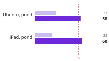
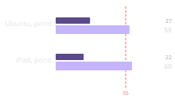
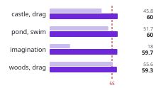
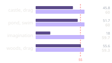

Dress Up reports
Reports on Messed Up Dress Up, the plain-JavaScript game made with M and N, where features are tried with real players before they are rebuilt as livelits in Hazel. Each report takes one question and answers it with measurements. The first rule they measure: 60 frames a second for everything a game controller does. Matthew Hammer.
The reports themselves live with the game, in its repository; Hazel's own series is the Hazel reports.
-

^du_report(15)· 2026-10-21What did the two mock-ups for a dragon, its fire and armour for the knight's horse show Matthew before anything was built, and what went out? Both pages are here to play with. They were ready 10 and 31 minutes after he asked; he left the pick to M and N, so the costume, all six fires and all six sets went out in 0.0.392, 81 minutes after the ask.
-

^du_report(10)· 2026-10-18How is the friend drawn in each pose, and how was it drawn before? One skeleton set by angles, moved by moments of a stride, turned by facing: fifteen poses drawn by seven versions from 0.0.30, which could only stand toward us. Crawling changed most, toward us and away, from a floating crouch to hands on the floor; and the picture archive had drawn sitting, cross-legged and dancing as standing at every run.
-

^du_report(9)· 2026-10-18Is the friend the same size inside a place and out, against its doors, when the player shapes the friend? Not on the tree's porches and bridges, which set everyone to one height: fixed in 0.0.302, with every door sized to the default friend (0.68 to 0.91 of each) and one rule for crawling, so a child and the default walk and an adult crawls, inside and out. Left to decide: the house's giant front door.
-

^du_report(8)· 2026-10-18How could the whole game move to Hazel, in two months or three? What it draws (56% of its 22,407 lines: the friend, the poses, the places) ports piece by piece, each checked against the picture archive's own SVG; in three months the rules too. The frame loop, the controllers and the sound wait on Hazel, not on time.
-

^du_report(7)· 2026-10-18Does M extend the game for social stories, and N for stress tests? Read against all 34 of their requests: N's mostly, 8 of 13, by load (cauldrons until the laptop froze, a room of bubbles) or by rules at their edges (pits, boulders, being hit); M's 9 of 22 make room for a story or something her own (a dining room, a hut village, her letter), and 6 more mend the tools.
-

^du_report(6)· 2026-10-18Messed Up Dress Up beside the adventure-game engines of 1984 to 1993: Sierra's AGI and SCI, LucasArts' SCUMM, the Hugo games. The same layers behind a picture (priority, control; our depths and collision boxes); of their eleven hard problems we meet nine again, faster; what is new now; Hugo's House of Horrors, and what it would take to be a game like it.
-

^du_report(5)· 2026-10-18What did the two full-screen designers (🎵 Music, 🗺️ World design) do alike that the other 17 tabs do not? Thirteen choices, from a slim bar to boxes within boxes and the game as the first card. 🏞️ Background alone declares 1,337 rows; a player sees 9 to 50 in one place. A proposal for every panel, nine rules, with before and afters for the castle's themes, the bubble themes and a full-screen background designer.
-

^du_report(4)· 2026-10-18How can the picture archive keep a year of runs in one repository? No PNGs (a run's were 185 to 397 MB), one folder rewritten by every run and every run a git tag: the same five runs in 24 MiB, against 768. And what moving it showed: the settings file did not decide its drawing (a saved time, the page's clocks, random choices), and 0.0.198's hidden drawings left out look the same, the waterfall 183 to 116 KB.
-

^du_report(3)· 2026-10-16Why did the game stay slow after the duck pond, everywhere, until a reload? The 🏞️ Background tab: with it open the pond swam at 2.4 to 14.9 frames a second, its controls working out the whole castle on every refresh (790 ms); fixed on a branch, 59.3. And what a session keeps: a bounded cache, not a leak. The series' first measurements on GitHub's computers.
-


^du_report(2)· 2026-10-16Why was the game choppy on an Ubuntu laptop (Intel i7) and an iPad, and pausing on Matthew's laptop, and what made it smooth? Two causes, Firefox's animations and Safari's shapes, both answered by drawing the places as still bitmaps while the friend moves: the duck pond 27 → 58 and 22 → 60 frames a second. And a stale "choppy" mark on Matthew's laptop. Measured on each computer and pasted into a public page; next, an opt-in canister of our own.
-


^du_report(1)· 2026-10-16Does the game hold 60 frames a second for what a game controller does in a place, how much of that do our tests check, and where do they run? Every measured case holds 59.3 to 60 on 0.0.78: walking and dragging the friend in seven places, at 1920×1080. What made the difference was in the browser's work, not the game's: masks, a repeated write, blurs, the imagination's live pictures. The measuring covers 2 of 8 kinds of action in 7 of 24 places, and none of it runs in CI yet.